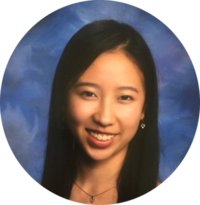

About Me

Hello! I'm Michelle and I'm a junior majoring in Statistics and minoring in Digital Humanities.
I'm excited to participate in this class to continue exploring my interest in GIS
and mapping technologies as well as developing my skills with HTML. I think visualizations are a really
great medium to tell stories about data, and I'm interested to improve my abilities in storytelling
through group work or individual assignments. Professionally, I think it'd also be helpful to learn how
to make a personal portfolio to showcase my previous projects. I'm hoping that through this course, I'll
be able to gain skills that will help me acheive these goals!
Feel free to connect with me on LinkedIn :)
Outside of classes I like to...
- go on walks around my neighborhood
- There's always a lot of random hidden stairways/paths and it's fun to explore new ones.
- paint
This past year, I picked up painting as a way to destress and do more hands-on activities. I realized that I often defaulted to watching something on my computer or phone to relax. But with quarantine and Zoom university, I was getting more screentime than I needed and craved other outlets to relax.
- participate in club activities
- I'm really passionate about my club DataRes, which is a project based data science organization. I love meeting new people with similar interests as me and enjoy helping others learn and grow. I learn a lot about my own teamwork and leadership skills in the process, which I find incredibly rewarding.